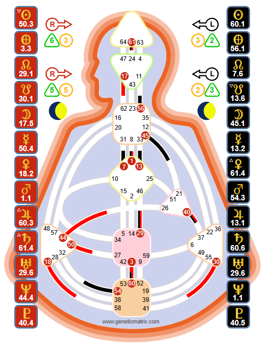

The life force of the planet. With sustainable Sacral energy that regenerates through sleep, Generators are the builders, the creators, and the ones designed to find deep satisfaction through responding to what lights them up.

Tools, not doctrine. The Human Design System was transmitted through Ra Uru Hu beginning in 1987. Genetic Matrix provides these tools for your own exploration and experiment. The chart shown is Jim Carrey - a Pure Generator.
Generators are defined by one thing: a defined Sacral center - the large square near the bottom of the bodygraph. This single mechanical fact creates everything that makes a Generator a Generator: sustainable life-force energy, an open and enveloping aura, and the capacity to do work that most other Types simply cannot sustain.
The Sacral center is a motor - and unlike any other motor in the chart, it regenerates. A Generator who goes to sleep having used their Sacral energy fully will wake up restored and ready to engage again. This cycle of engagement and regeneration is the Generator's design. It is what makes them the workforce of humanity - not in a diminished sense, but in the most profound sense. Without Generators, nothing gets built, nothing gets maintained, nothing endures.
Generators make up approximately 37% of the population. Together with Manifesting Generators (another 33%), Sacral beings represent about 70% of all humans. The world runs on Sacral energy.
Key Insight
The Generator's power is not in initiating. It is in responding. The Sacral center does not generate energy on its own - it responds to stimuli from the outside world. A question, an opportunity, a person, a situation triggers the Sacral, and the energy flows. This is why the Strategy is to wait: not because Generators are passive, but because their energy is designed to be activated by life itself.
"Wait to respond" is the most misunderstood phrase in Human Design. It does not mean sitting on a couch waiting for life to happen. It means allowing something from the outside world to activate your Sacral before committing your energy.
The Sacral responds to yes/no stimuli. Someone asks you a question - your gut responds before your mind can think about it. You see a job posting - something in your body pulls toward it or pushes away. You meet a person - there is a visceral "uh-huh" or "uhn-uhn" before any rational evaluation.
This is the response. And it is always reliable - far more reliable than the mind's analysis, which can talk you into or out of anything. The Generator's practice is learning to trust the body over the mind.
The Sacral speaks through the body. It can show up as gut sounds (literal "uh-huh" or "uhn-uhn"), a physical pull toward something, a rising energy and excitement, or a flat, disinterested heaviness. It is not an emotion - it is a motor response. It is immediate, binary, and clear - if you learn to listen.
The key is that the Sacral needs something to respond to. It does not initiate. A Generator staring at a blank page thinking "what should I do with my life?" will not get a Sacral response - there is nothing to respond to. But a Generator who sees ten different options and checks their gut response to each one will get clear, reliable guidance.
When Generators skip the response and initiate from the mind - starting projects because they "should," committing to things because they seem logical, pushing toward goals the mind has decided on - they meet frustration. The energy does not flow. The work feels like a grind. The satisfaction never comes. This is the not-self in action: the Generator living like a Manifestor, trying to make things happen instead of responding to what life brings.
While all Generators share the same Strategy (wait to respond), they can have different Authorities - different ways of making reliable decisions:
Emotional Authority (Solar Plexus defined): The most common. You need time - the emotional wave must settle before clarity emerges. There is no truth in the now. Sleep on major decisions. Ride the wave. The Sacral response is still there, but it needs to be confirmed over time through the emotional process.
Sacral Authority (Solar Plexus undefined): Pure, in-the-moment response. The gut speaks and it is reliable immediately. "Uh-huh" or "uhn-uhn." The practice is trusting this body response without letting the mind override it with analysis and doubt.
Key Insight
A Generator with Emotional Authority still responds through the Sacral - but the response needs to be checked over time. The initial "uh-huh" might change as the emotional wave moves. A Generator with Sacral Authority can trust the immediate response. Knowing which Authority you carry changes how you use the Strategy.
The Generator's aura is open and enveloping. It extends outward and wraps around other people, drawing them in. This is why Generators do not need to chase - their aura is already pulling opportunities, people, and experiences toward them. The magnetic quality of the Generator aura is one of the most powerful forces in human interaction.
This aura is designed to receive. It takes in stimuli from the environment, processes it through the Sacral center, and produces a response. When the Generator is in the right place, doing the right work, surrounded by the right people, their aura hums with a quality that others can feel. It is the warmth of someone fully engaged in what they love.
When the Generator is frustrated - committed to work that does not light them up, stuck in situations they initiated from the mind - their aura becomes heavy and repelling. Others can feel this too. The frustrated Generator pushes people away instead of drawing them in.
Satisfaction is the Generator's signature - the feeling that confirms you are living correctly. It does not come from achieving goals the mind has set. It comes from using your Sacral energy in response to things that genuinely light you up. Satisfaction is the body's confirmation: "This is correct. This is what I am here to do."
Frustration is the not-self theme - the signal that something is off. When a Generator is frustrated, it almost always means they have committed their energy to something without a true Sacral response. They said yes when their gut said no. They initiated instead of waiting. They are doing work that does not engage their life force.
Frustration is not a problem to fix. It is a navigation tool. Every time you feel frustrated, it is pointing you back toward your Strategy: wait, respond, and commit your energy only to what genuinely lights you up. Over time, as you follow the response more consistently, frustration decreases and satisfaction becomes the baseline of your life.
Work is sacred for Generators. Not in a spiritual sense - in a mechanical sense. The Sacral center is a work motor. It is designed to be used, to be engaged, to be committed to building, creating, and sustaining. A Generator who is not doing work that lights them up is a Generator who is dying inside - the energy stagnates, the body deteriorates, the frustration builds.
The key is the right work. Not the work the mind thinks you should do. Not the work that pays the most or carries the most status. The work that makes your Sacral hum. The work where you lose track of time. The work that leaves you tired at the end of the day but deeply satisfied - not depleted.
Generators build mastery over time. Unlike Manifesting Generators who can skip steps and pivot quickly, pure Generators build momentum through sustained commitment. They get better and better at what they do, developing deep expertise through the sustained application of Sacral energy. This is the Generator's path to success: not through speed or innovation, but through the relentless, satisfying application of life force to the work that is correct for them.
On Genetic Matrix: Generate a free Foundation chart to confirm your Type and Authority. Advanced charts reveal your Profile, Centers, Channels, and Gates. Pro charts show your complete Variable including Determination, Environment, Perspective, and Motivation - the full cognitive architecture of your Generator design.
The experiment: For one week, practice noticing your Sacral response before committing to anything. When someone asks you to do something, check your gut before your mind answers. When an opportunity presents itself, notice whether your body pulls toward it or feels flat. Keep a journal of what you responded to and what you initiated - and notice the difference in how each feels.
The celebrity database: Explore Generators in Genetic Matrix's 87,000+ celebrity database. Study how the Generator mechanic manifests in public figures across every field - from artists to athletes to entrepreneurs. See the pattern of response, mastery, and satisfaction playing out in real lives.
Overview of all Human Design Types - Strategy, Authority, and aura mechanics.
The multi-passionate hybrid. Speed, response, and the art of informed action.
The guide. Recognition, invitation, and the path to success.
The initiator. Independence, informing, and the path to peace.
The mirror. Openness, the lunar cycle, and the path to surprise.
See your full chart - Sacral definition, Authority, Profile, Centers, Channels, and the complete architecture of your Generator design.
Try free with Starter plan →